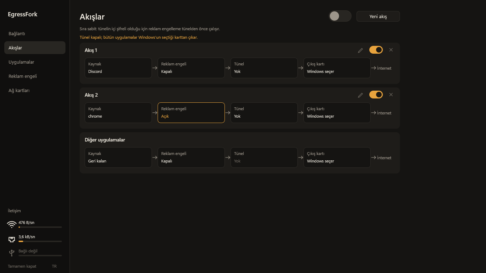
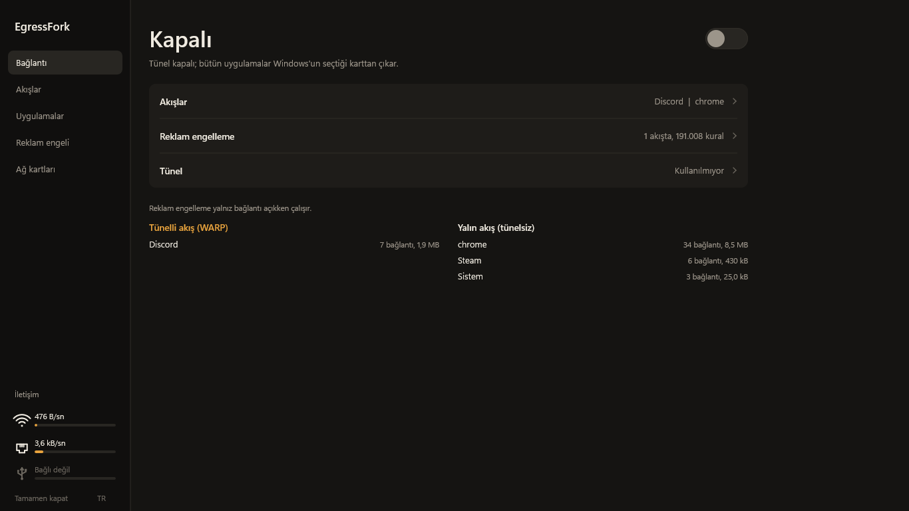
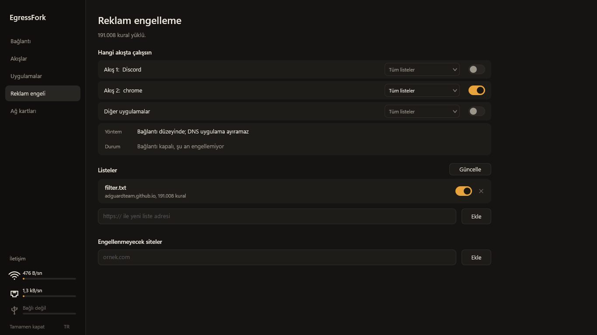
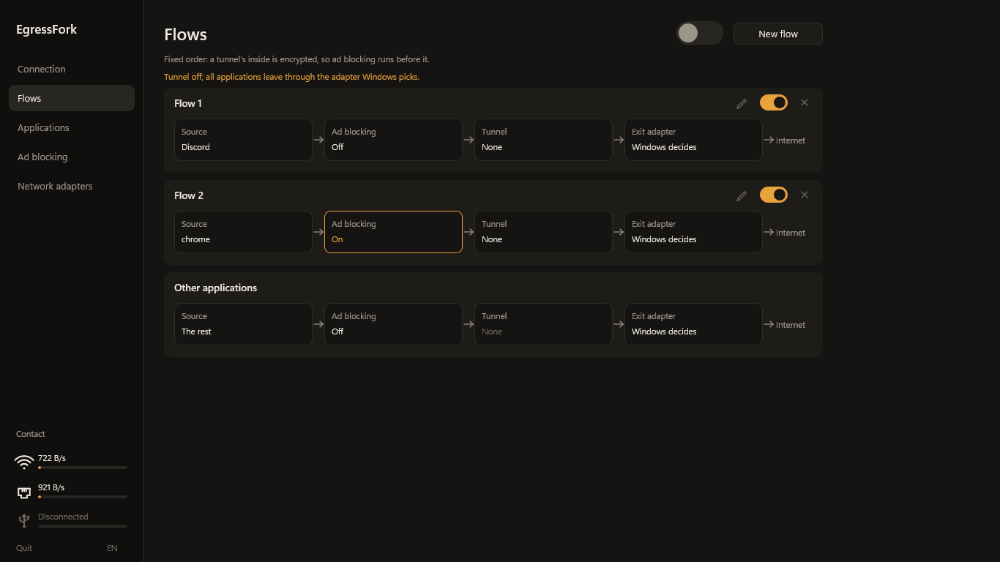
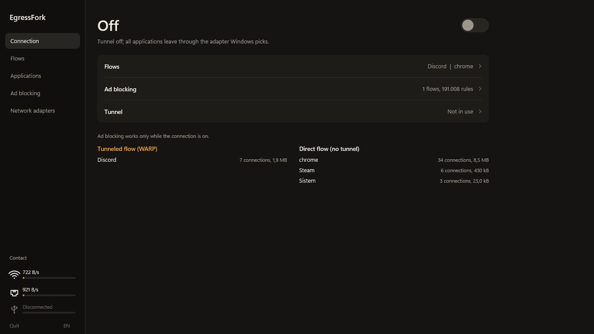
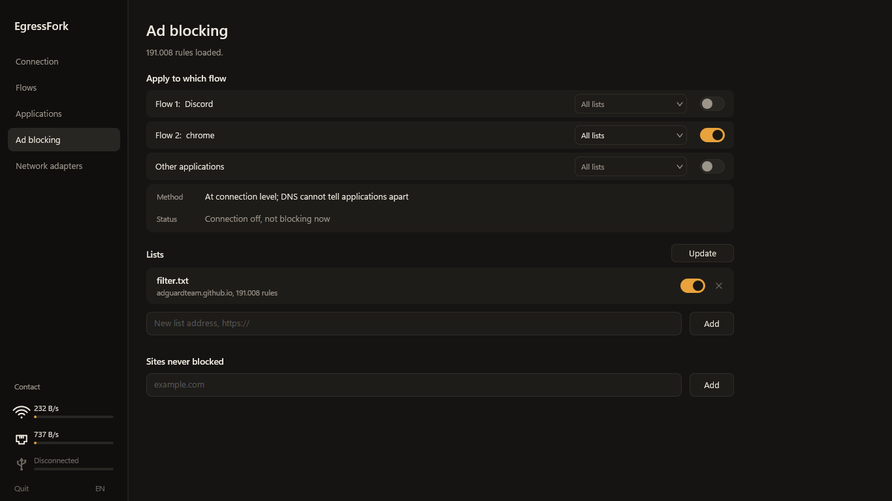

EgressFork
Her uygulamanın internete hangi bağlantıdan çıkacağını siz seçin. Oyun kablodan, tarayıcı Wi-Fi'dan, sohbet bir tünelden; geri kalan her şey Windows'un seçtiği yoldan.

Neler yapar
- Akışlar: Uygulamaları gruplayın; her grup için çıkış kartı, tünel ve reklam engelleme seçin.
- Çıkış: Wi-Fi, Ethernet, USB ile telefon interneti ya da bilgisayardaki bir VPN uygulamasının ağ kartı.
- Tünel: Cloudflare WARP ya da kendi WireGuard sunucunuz.
- Reklam engelleme: Yalnız seçtiğiniz akışlarda, istediğiniz filtre listeleriyle.
- Ağ kartları: Her kartın anlık hızı ve son 60 saniyesi.
- İnternet bekçisi: Tünel 45 saniye internete ulaşamazsa kendiliğinden kapanır, ağınız eski haline döner.
Nasıl kullanılır
- EgressFork'i açın ve yönetici iznini onaylayın. Dil sol alttan değişir.
- Akışlar sayfasında iki örnek akış hazırdır (Discord; Chrome reklam engellemeli). İsterseniz Yeni akış açın. Sonra Uygulamalar sayfasında uygulamanın satırındaki sağ düğmeye basıp akışı seçin; listede olmayan program için Başka uygulama.
- Akışlar sayfasında akışın çıkış kartını seçin. Tünel isterseniz WARP ya da “Kendi sunucum” ile bir WireGuard
.confdosyası verin. - Reklam engelleme istiyorsanız akışta açın, Reklam engeli sayfasında Güncelle'ye basıp listeyi indirin.
- Bağlantı sayfasındaki anahtarı açın. Kapatınca ağınız eski haline döner.


Gerekenler
- Windows 10 ya da 11 (64 bit). Ağ kartı oluşturmak için yönetici izni.
- WARP tüneli için ücretsiz Cloudflare WARP uygulaması ayrıca kurulu olmalı. Kendi WireGuard sunucunuz ya da yalnız ağ kartları için gerekmez.
Sorun olursa
- İnternet gitti: Bağlantı anahtarını kapatın; ağ eski haline döner. Bekçi bunu 45 saniye sonra kendisi de yapar.
- Bir uygulama yanlış yoldan çıkıyor: Uygulamalar sayfasında doğru akışta olduğuna bakın; bazı uygulamalar birden çok program çalıştırır (ör. güncelleyici), onları da ekleyin.
- Destek: Uygulamadaki Teşhis raporu düğmesi bir metin dosyası hazırlar; isterseniz bize gönderin: fustademo@gmail.com.
Veri toplamaz: kullanım istatistiği, reklam kimliği yoktur; ayarlar yalnız bilgisayarınızda durur. Ayrıntı: gizlilik politikası.
EgressFork
Choose which connection each Windows app uses. Your game on the wired connection, your browser on Wi-Fi, your chat app through a tunnel; everything else keeps the route Windows picks.

What it does
- Flows: group apps and choose exit card, tunnel and ad blocking for each group.
- Exit: Wi-Fi, Ethernet, USB phone tethering or the network card of a VPN app on your PC.
- Tunnel: Cloudflare WARP or your own WireGuard server.
- Ad blocking: only in the flows you choose, with the filter lists you want.
- Network adapters: live speed and the last 60 seconds of each card.
- Internet watchdog: if the tunnel cannot reach the internet for 45 seconds it closes itself and your network returns to normal.
How to use it
- Open EgressFork and accept the administrator prompt. The language is at the bottom left.
- On the Flows page two example flows are ready (Discord; Chrome with ad blocking). Create a New flow if you like. Then on the Applications page press the button on the right of the app's row and pick the flow; for a program that is not listed, use Other application.
- On the Flows page choose the flow's Exit adapter. For a tunnel, pick WARP or give a WireGuard
.conffile under “My own server”. - For ad blocking, turn it on in the flow and press Update on the Ad blocking page to download the list.
- Turn on the switch on the Connection page. Turning it off returns your network to normal.


Requirements
- Windows 10 or 11 (64-bit). Administrator rights to create the network adapter.
- The WARP tunnel needs the free Cloudflare WARP client installed separately. Not needed for your own WireGuard server or for network cards only.
If something goes wrong
- No internet: turn the connection switch off; the network returns to normal. The watchdog also does this by itself after 45 seconds.
- An app uses the wrong route: check on the Applications page that it is in the right flow; some apps run several programs (an updater, for example), add those too.
- Support: the Diagnostic report button in the app writes a text file; send it to us if you like: fustademo@gmail.com.
No data collection: no usage statistics, no advertising ID; settings stay on your PC. Details: privacy policy.